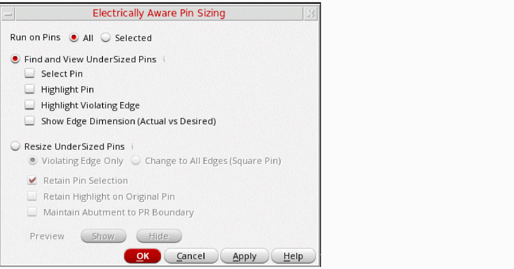

Resizing Undersized Pins in the Pin Tool
Use the options in the Electrically Aware Pin Sizing form to resize pins that do not meet the electrical requirements of the design. You can either first find and view the violating pins or directly resize them.

- Choose Plan – Pin Planning – Pin Tool. The Pin Browser is displayed.
-
Choose Tools – Electrically Aware Pin Sizing.
The Electrically Aware Pin Sizing form appears. - Select one of the following Run On Pins options to specify the pins on which the command has to run. Choose All (default) to run the command on all top-level and level-1 pins in the design. or choose Selected to run the command on the selected pins.
- Select Resize UnderSized Pins to fix the pin violations.
- Select Violating Edge Only to resize only the violating pin edges to the desired electrically-aware width. All other edges remain unaffected.
- Select Change to All Edges (Square Pin) to resize all edges to create square pins.
- Select Retain Pin Selection to retain the selection of pins after they are resized.
- Select Retain Highlight on Original Pin to retain the highlights on the pins that were selected for resize.
- Select Maintain Abutment to PR Boundary to ensure that pins that are initially abutted to the PR boundary retain the abutment even after they are resized.
- Select Show in the Preview section to see a preview of the pins after they are resized before updating the layout.
- Verify that the changes are as per your requirements.
- Click Hide to close the preview.
- Click OK.
Pins in the design are resized as per your specifications.
Related Topics
Finding and Viewing Undersized Pins in the Pin Tool
Electrically Aware Pin Sizing Form
Electrically Aware Pins in the Pin Tool
Return to top